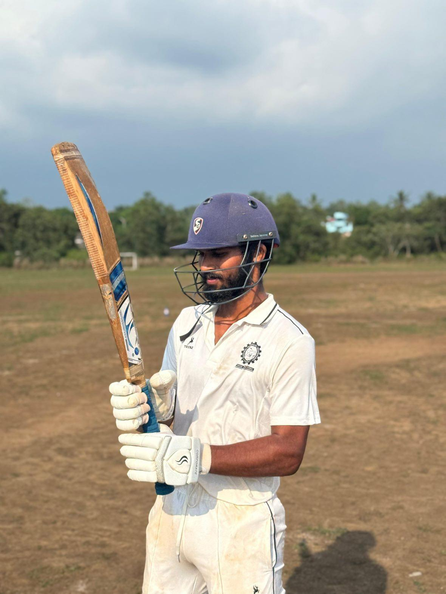

Save Soil. Live Fully.
Operations Research & Data Analytics · IIT Kharagpur
Hi, I'm Abhinav Banoth, a first-year M.Tech student in Operations Research and Data Analytics in the Department of Industrial and Systems Engineering at IIT Kharagpur. I did my B.Tech in Mechanical Engineering at NIT Calicut. I'm interested in using optimization and analytics to solve real operational problems, especially in the airline industry.
I enjoy how quickly the field is changing with automation and AI. It keeps me learning, and in my first semester I have picked up Gurobi, CPLEX and LLM-based tools while applying them to real problems.
Outside academics, I'm an outdoors person. I love trekking, swimming in lakes and ponds, and trying adventure activities. I come from a farming background and have practised composting, crop rotation, mulching and natural pest control. I also play badminton competitively and enjoy chess.
I try to live life to the fullest, with a heart full of joy. Nature is my favourite escape, though I still can't convince the trees to laugh at my jokes. They do respond in their own way.
| Year | Degree | Institute | Score |
|---|---|---|---|
| 2026–28 | M.Tech, Operations Research and Data Analytics | IIT Kharagpur | Pursuing |
| 2025 | B.Tech, Mechanical Engineering | NIT Calicut | 6.53 / 10 |
| 2021 | Class XII, TSBIE (MPC) | Sri Chaitanya Junior College, Hyderabad | 92.8% |
| 2019 | Class X, CBSE | St. Peter's Central Public School | 74.0% |
I play cricket at a competitive level. I represented my college at inter-NIT tournaments three times and played at district level (Calicut) and zonal level for the North Zone in Kerala. We also won second place in the Kerala Cricket Premier League (North Zone).
